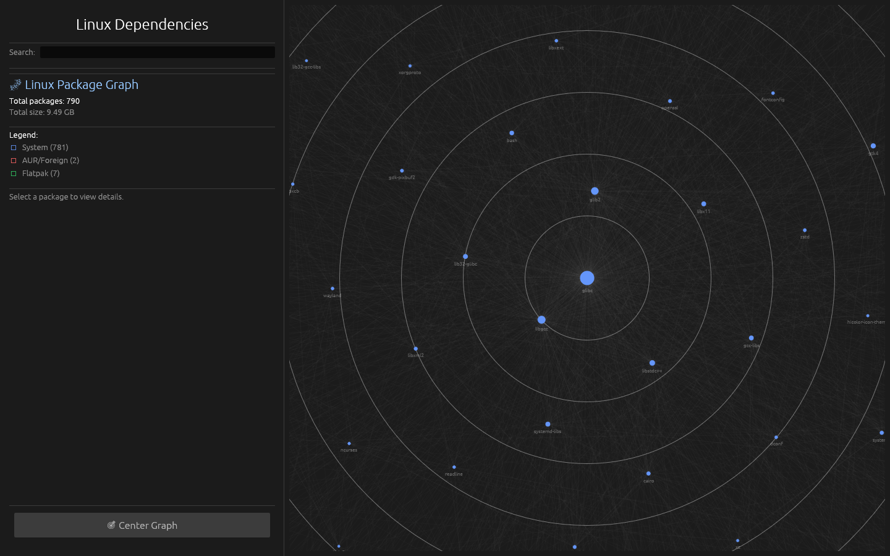
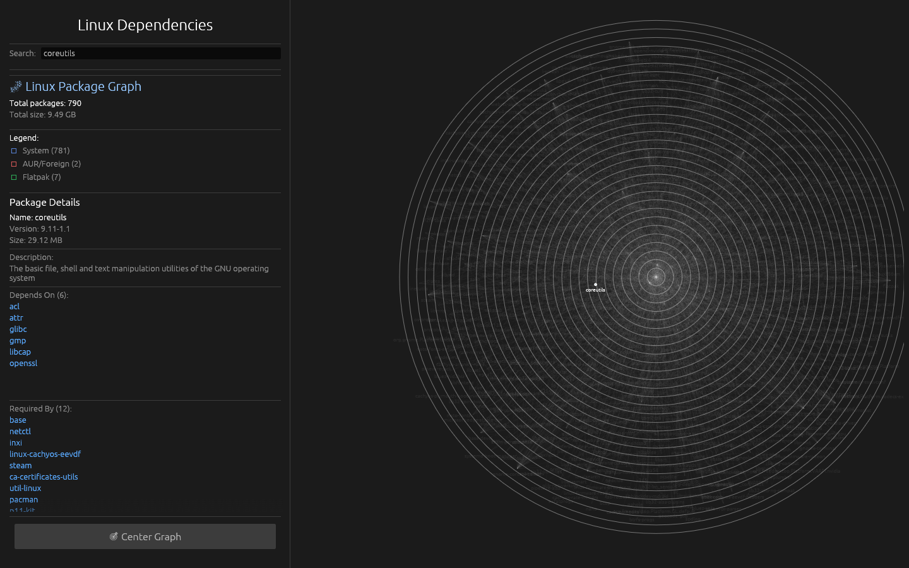
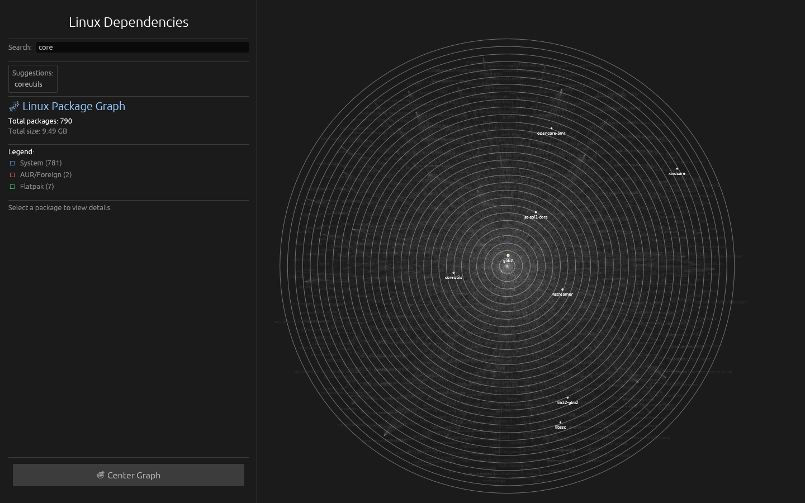

Map your system's DNA with absolute precision.
Interactive package dependency visualizer for Linux systems. Supports system packages, foreign builds, and Flatpaks with seamless rendering.
•
🐧
Linux Native
Everything you need. Nothing you don't.
Interactive Graph
Zoom, pan, and drag nodes in a fully physics-based visual dependency tree.
Smart Search
Instant search by package name and description with auto-filtering.
Source Highlighting
Color-coded nodes for system, foreign, and Flatpak packages.
Idle Rendering
Conserves battery and CPU by stopping redraws when the graph is idle.
Visualizing Complexity

Main Graph View

Deep Inspection

Lightning Search
Ready to Compile?
bash
# Clone the repository
git clone https://github.com/seniordesync/Linux-Graph.git
cd Linux-Graph
git clone https://github.com/seniordesync/Linux-Graph.git
cd Linux-Graph
# Build for release
cargo build --release
cargo build --release
# Run the application
cargo run --release
cargo run --release